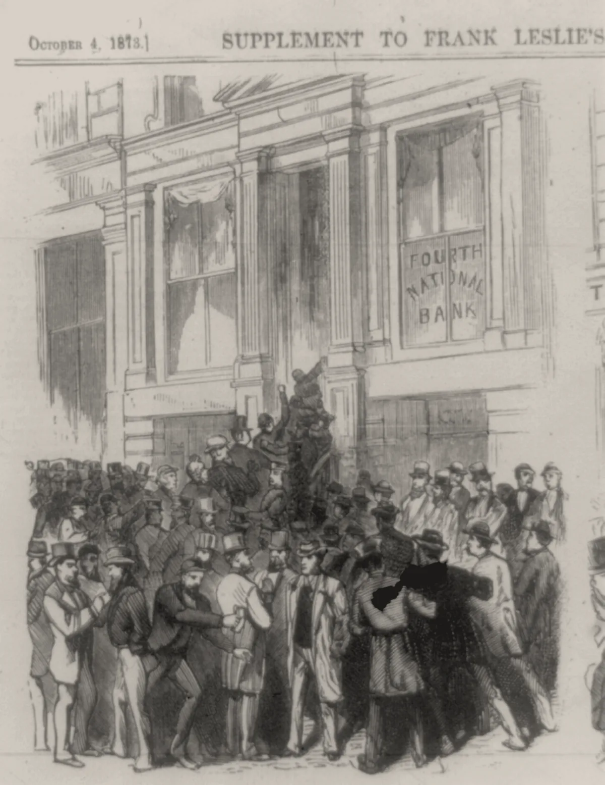

· Edición 1 · 9 min de lectura
Deuda, reconstrucción, páramos y quién se queda con el crédito
Revisada el · 1 corrección posteriores a la publicación

Grabado anónimo en Frank Leslie's Illustrated Newspaper, 1873 · Dominio público, vía Wikimedia Commons
Colombia se acerca a su techo de deuda
En pocas palabras. Colombia debe mucha plata. Los expertos que vigilan esa deuda avisaron que el país se acerca a un límite del que ya no se puede volver. Si lo cruza, podría no alcanzar a pagar lo que debe, y eso pondría en riesgo la economía de los próximos años.
Qué pasó. Piense en una familia que paga cuotas al banco cada mes. Mientras el sueldo alcance, todo bien. Pero si casi todo el sueldo ya está comprometido, cualquier imprevisto la pone en aprietos.
El Comité Autónomo de la Regla Fiscal es un grupo de expertos. Su trabajo es vigilar que el Gobierno no se endeude más de lo que puede pagar. Ese comité advirtió que el país se acerca al límite irreversible de la deuda: el punto desde el que ya no hay vuelta atrás. Esos límites tienen algo: se ven mejor desde antes.
El aviso llega en un mal momento. El Gobierno ya le sumó más de medio billón de pesos al presupuesto de 2026 para atender el terremoto del 10 de agosto. Y se propuso una reforma para que la DIAN, la entidad que cobra los impuestos, recaude con solo cuatro impuestos.
Qué nos dice. El gasto del Estado es rígido: es difícil de mover. Por eso queda poco espacio para lo imprevisto. Un solo terremoto basta para prender las alarmas.
Por qué no se arregla.
- Subir impuestos cuesta apoyo político. Pocos quieren pagar ese precio.
- Recortar gastos tampoco es fácil. Choca con pagos obligatorios que no se pueden cambiar de un día para otro.
- Cuatro impuestos suena más sencillo. Pero nadie ha calculado cuánta plata traerían. Ya se sabe cuántos impuestos habría, pero no cuánto dinero, que era justo la pregunta.
- Hay quien gana con que nada cambie. Son los que tienen exenciones, es decir, permisos para pagar menos impuestos. Nadie ha querido revisarlas. Es la única parte del sistema que a nadie le parece complicada.
Para pensar. Hoy muchas pequeñas y medianas empresas le pagan a un contador para cumplir con un sistema de impuestos enredado. Si el sistema se simplifica, ¿cuántas dejarían de necesitarlo?
Reconstrucción rápida frente a control
En pocas palabras. Después del terremoto hay que reconstruir rápido. Para eso, el Gobierno permitió contratar con menos trámites. Pero menos trámites también quiere decir menos control sobre cómo se gasta la plata.
Qué pasó. El Gobierno sacó un decreto, una norma que expide el propio Gobierno, con reglas especiales para contratar las obras de la reconstrucción. Esa misma semana, la revista CAMBIO reveló el expediente de la Corte Suprema contra el senador Didier Lobo. El caso es por un contrato de nutrición con presuntos sobrecostos, es decir, en el que se habría pagado más de lo que las cosas valían.
Qué nos dice. Imagine que se le inunda la casa y necesita un plomero ya. No va a pedir tres cotizaciones: llama al primero que conteste. Así se va más rápido, pero es más fácil que le cobren de más. Las emergencias piden rapidez, y la rapidez suele traer menos controles.
Por qué no se arregla.
- En una emergencia se piden menos requisitos. Justo cuando hay más plata y más afán.
- Los datos de los contratos existen. Pero están en un formato que el público no entiende.
- A los políticos les conviene mostrar obras pronto, aunque no sean las mejores.
Una idea. Un tablero público que siga cada contrato de la reconstrucción. Con datos abiertos, que cualquiera pueda consultar. Y que compare los precios con lo que cuestan las cosas en el mercado. Es una idea con cruce directo con Mattriz.
El Caribe sigue en riesgo de apagón
En pocas palabras. Air-e es la empresa que lleva la luz a buena parte del Caribe colombiano. Hace dos años el Estado tomó el control para arreglarla, pero los problemas siguen. Y la región sigue en riesgo de apagón.
Qué pasó. Cuando la empresa no funciona, el Estado la interviene: toma el control y pone a un administrador, el interventor. Air-e lleva dos años intervenida. Aun así, siguen tres problemas:
- Cambia todo el tiempo de interventor.
- Debe billones de pesos.
- Hay riesgo de apagón.
Un estudio calculó cuánto costaría hoy un racionamiento como el de 1992. Racionar es cortar la luz por turnos porque no alcanza para todos. El costo: más de 30 billones de pesos.
Qué nos dice. Intervenir una empresa no arregla un negocio que no se sostiene. Cambiar de conductor no arregla los frenos.
Por qué no se arregla.
- La tarifa no se puede pagar. Muchos usuarios no alcanzan a pagarla. Y subirla cuesta apoyo político.
- La ayuda llega tarde. Los subsidios, la plata con la que el Estado ayuda a pagar la factura, no llegan a tiempo.
- Robar luz se volvió normal. Las pérdidas por conexiones ilegales ya nadie las ve como raras.
- Los jefes no duran. Cada interventor hereda el problema y se va antes de resolverlo. El puesto parece hecho para durar menos que el problema que le toca arreglar.
Para pensar. En el Caribe sobra el sol; lo que falta es la luz. ¿Qué impide hoy que comunidades y comercios produzcan su propia energía solar?
Ecuador: se retiró la licencia, pero la concesión sigue vigente
En pocas palabras. En Ecuador, un proyecto minero en un páramo perdió su permiso ambiental. Pero la empresa conserva el derecho a explotar la zona. Puede quedarse esperando a que llegue un gobierno más favorable.
Qué pasó. Más de 50.000 personas marcharon en Cuenca para defender los páramos.
El proyecto se llama Loma Larga y es de la empresa canadiense Dundee Precious Metals. Recibió la licencia ambiental en junio de 2025. El Gobierno se la retiró en octubre de 2025. Pero la concesión sigue vigente. La concesión es el derecho a explotar la zona. Según los organizadores de la marcha, unas 46.000 hectáreas de páramo están entregadas en concesión.
Hay más. Se anunció que se reabrirá el catastro minero, el registro donde se piden y se entregan los títulos para hacer minería. Y en julio se firmó un tratado de libre comercio con Canadá.
Qué nos dice. El permiso tiene dos pisos. Imagine que usted tiene arrendado un local por contrato, pero le quitan el permiso para abrir. No puede vender nada, pero el local sigue siendo suyo. Así quedó el proyecto: sin permiso para operar, pero con derecho a esperar.
Por qué no se arregla.
- Cancelar sale caro. Si el Estado cancela las concesiones, las empresas lo pueden demandar ante tribunales internacionales de arbitraje. Un tratado nuevo puede darles aún más protección.
- El Estado necesita plata. Y el agua del páramo no paga regalías, que son lo que las mineras le pagan al Estado por sacar sus recursos.
- No es solo Ecuador. El caso se parece al de Santurbán, en Colombia.
Para pensar. Hoy el oro tiene precio en la bolsa, y el agua solo tiene a quien marche por ella. ¿Cómo se le pone un valor al agua que produce un páramo, para compararla con el oro en igualdad de condiciones?
IA, matemáticas y quién se queda con el crédito
Conflicto de interés declarado: uno de los matemáticos involucrados trabaja en Anthropic, la empresa que creó a Claude.
En pocas palabras. OpenAI dice que resolvió uno de los problemas más difíciles de las matemáticas con miles de programas de inteligencia artificial. Dos matemáticos que llevaban un año en ese problema dicen que les tomaron la delantera. La pregunta de fondo: ¿quién se queda con el crédito cuando gana el que más plata puede gastar?
Qué pasó. OpenAI es la empresa que creó ChatGPT. Dice que usó 10.000 agentes de inteligencia artificial para resolver el problema de Navier-Stokes. Un agente es un programa que trabaja por su cuenta en una tarea. Navier-Stokes es uno de los siete Problemas del Milenio, los grandes problemas sin resolver de las matemáticas. El esfuerzo habría costado unos 22,5 millones de dólares en computadores.
Los matemáticos Tristan Buckmaster y Levent Alpöge llevaban cerca de un año trabajando en ese problema. Dicen que OpenAI conoció su trabajo y se apuró para ganarles.
Otros matemáticos opinan distinto. Peter Scholze dijo que es una estrategia de relaciones públicas, o sea, una manera de hacerse propaganda. Jacob Tsimerman, que entró a OpenAI en julio, defendió el tamaño del logro.
Ojo: la prueba todavía no ha sido revisada formalmente. La pelea por el crédito va más rápido que la revisión.
Qué nos dice. Piense en una carrera en la que uno va a pie y otro en carro. Cuando un problema se puede resolver pagando muchos computadores, tiene ventaja quien tiene más plata, no necesariamente quien tuvo primero la idea. Llegar primero depende menos de pensar más rápido que de poder pagar la cuenta.
Por qué no se arregla. Hay miedo de que la investigación abierta se debilite. Los laboratorios pueden gastar decenas de millones para adelantarse a quienes empezaron el trabajo. Y no hay ninguna norma que lo impida.
Asombro
Las partes delantera y trasera del cerebro tendrían orígenes distintos. Un estudio de Stanford, publicado en Nature Neuroscience, encontró que la parte delantera del cerebro viene de un tipo de célula distinto del que forma la parte trasera. Una parte regula el latido y la respiración. La otra permite la poesía y las matemáticas. El patrón aparece en pollos, peces cebra y gusanos bellota, y viene de hace más de 550 millones de años. Un matiz: los autores no dicen que hayan sido dos órganos separados; es una deducción sobre la evolución. Gracias al hallazgo se pudieron cultivar, por primera vez, neuronas auténticas de la parte trasera del cerebro humano.
Un cráter de 390 millones de años, encontrado al buscar dónde acampar. En 2024, Joël Lapointe preparaba un viaje de campamento en Quebec. En mapas satelitales vio una forma circular cerca del lago Marsal, y llamó a expertos. En el segundo día de la expedición aparecieron las huellas de un impacto: conos de impacto y grandes zonas de roca fundida. Buscaba dónde poner la carpa y encontró dónde cayó algo muy grande. El nombre lo definió el consejo innu de Ekuanitshit.
El planeta más joven confirmado hasta ahora. Elias 2-24 b, del tamaño de Júpiter, tiene menos de un millón de años. En años de planeta, es un recién nacido.
Ver lo que vio un ratón. Investigadores reconstruyeron pedazos de video de 10 segundos a partir de la actividad de las neuronas de la corteza visual de ratones, la zona del cerebro que procesa lo que ven los ojos. Cine sin guion, de 10 segundos y con un ratón de camarógrafo.
La paradoja del día
En Ecuador, a un proyecto minero en el páramo le quitaron la licencia ambiental y le dejaron la concesión. No puede operar, pero tampoco tiene que irse. Es como cancelar una obra y dejarle al constructor las llaves del terreno, por si cambia el dueño de la casa.
Seguimiento de la decisión
Pendiente · sin fecha fija
Corte Suprema: Decidir el proceso contra el senador Didier Lobo por un contrato de nutrición con presuntos sobrecostos.
Correcciones
Datos corregidos después de publicar; cada corrección lleva su fecha.
Corrección ·
Reescribimos la edición en un lenguaje más sencillo, con frases cortas y ejemplos cotidianos. Los datos y las fuentes son los mismos.